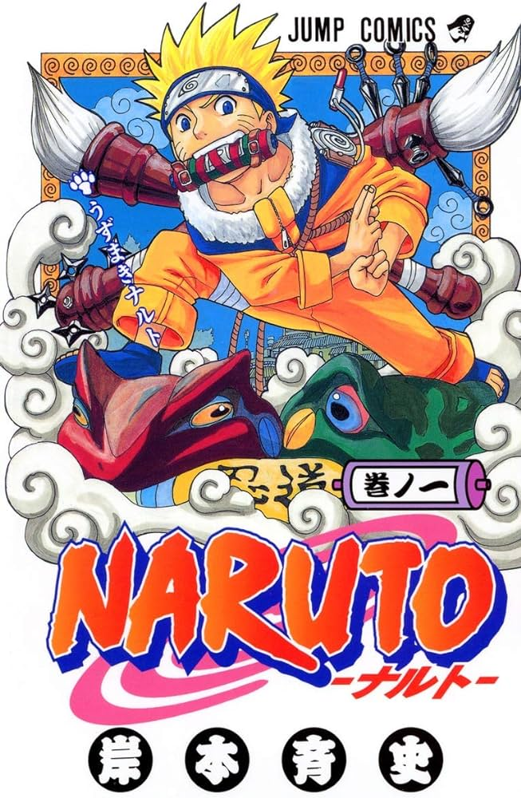

Resumo
Naruto é um anime baseado no mangá de mesmo nome escrito por Masashi Kishimoto. A série gira em torno das aventuras vividas por Naruto Uzumaki, um jovem órfão habitante da Aldeia da Folha que sonha em se tornar o quinto Hokage, o maior guerreiro e governante da vila. Ao se graduar como ninja, Naruto descobre que tem um demônio raposa selado dentro de si. Seu pai, o quarto Hokage, aprisionou a raposa no próprio filho quando a entidade ameaçava destruir a Aldeia da Folha, sacrificando assim a própria vida. Ao lado dos colegas, em especial Sakura, Sasuke e o mentor Kakashi Hatake, ele persegue a árdua missão de se tornar o maior ninja e deter aqueles que planejam fazer mal à sua cidade. O jovem trio que se forma quando Naruto está em busca de treinamento embarca em diversas missões para a aldeia e, durante o exame ninja, surge o vilão Orochimaru, um criminoso procurado. Atualmente o anime encontra-se encerrado com um total de 720 episódios. Naruto está dividido em duas séries diferentes: a primeira com 220 episódios conta a história do ninja em sua infância, enquanto Naruto Shippuden (500 episódios) já mostra todo mundo crescido e enfrentando problemas ainda mais sérios.
